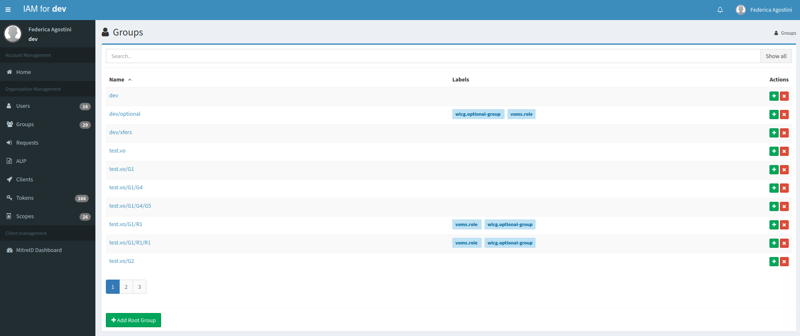
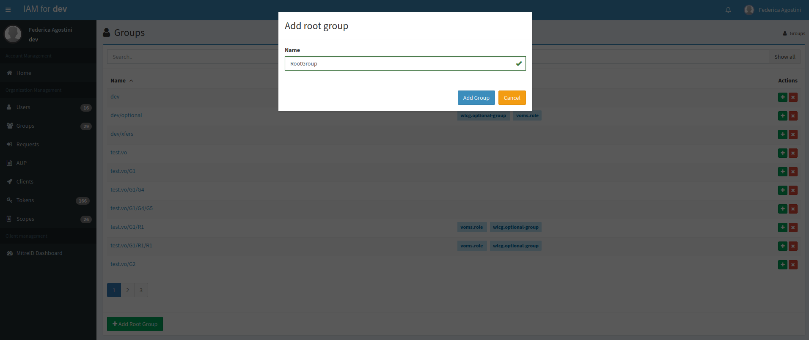
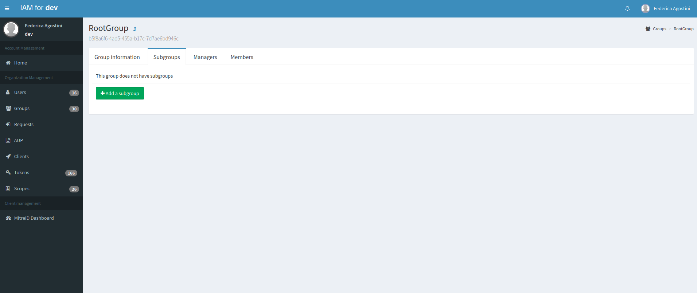
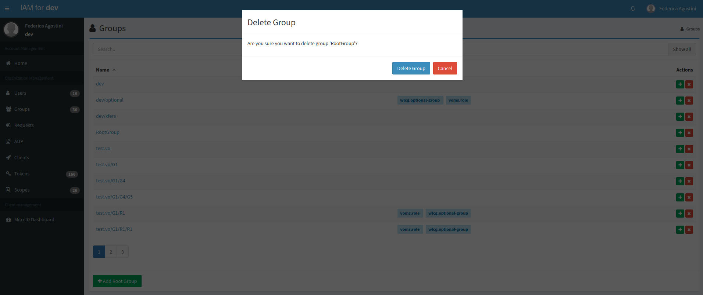
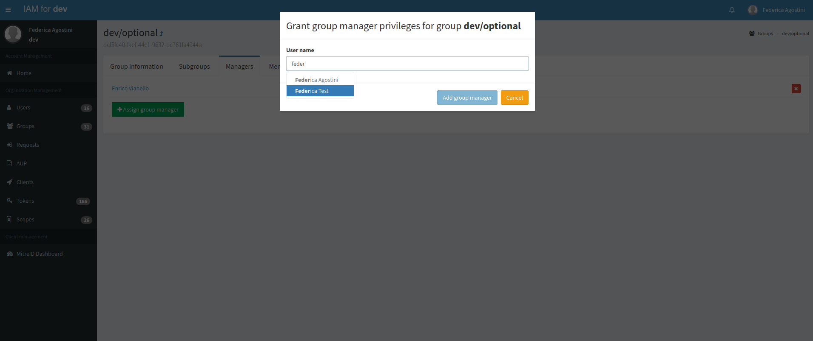
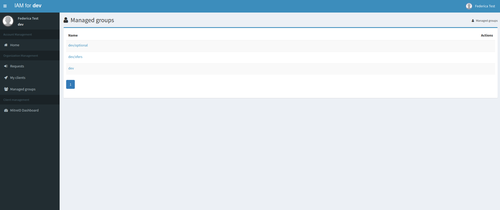
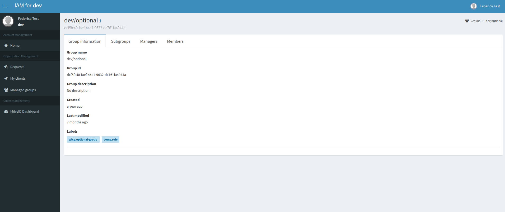

Group Management
IAM provides a group management system, that can be used by IAM Administrators and Group Managers to create groups, remove existing ones and manage membership in the group.
Groups can be organized in a hierarchical structure, with the following constraints:
- a group can have only a parent group;
- a group can have many childrens.
Manage groups as IAM Admin
The simplest way to manage groups is using the IAM dashboard.
Creating a group
From the home page, open the Groups section and click the Add Root Group button:

To create a group, specify a group name.

A new children group can be created from the parent group details page, clicking on the Add a subgroup button of the Subgroups upper tab.

Deleting a group
From the groups list page, click on the corresponding X button. A confirmation window will be opened, so you can confirm or abort the the delete operation.

Only empty groups can be removed. If you try to remove a group with a child group or with user members, the operation is aborted.
Managing membership for a group
To add a user to a group open the user details page. In the Groups section, click on the Add to group button:

Choose one or more groups and confirm the operation:

Starting with version 1.7.0, when a user is added as member of the children group A/B, IAM
takes care of adding them also to the parent group A that
they are not already a members of. In previous versions this had to be done
manually by the IAM administrator. Following the same rationale, when a user is
removed from the parent group A, it is also automatically removed from any children groups
(e.g. A/B) they are members of.
To remove a user from a group, click the Remove button.
Members can also be removed from the group details page, clicking on the corresponding X button as shown in the following screenshot:

Assign Group Manager privileges
Group Managers are IAM users with privileges that allow to manage groups.
In order to assign Group Manager privileges to a user, you can select the group, click on the Managers tab and then on Assign group manager. A popup window will appear to search for IAM users: after selecting the corresponding user that wants to became Group Manager, click on Add group manager.

Manage groups as Group Manager
Starting from IAM version 1.8.1, when a user is a Group Manager a left tab Managed groups that lists the groups they are group managers of appears in the homepage.

Once the Group Manager clicks on a group, what they can see in the upper tabs is
- detailed view of group information (Group information)
- list of children groups, if any (Subgroups)
- list of Group Managers (Managers)
- list of group members, if any (Members)

The Group Manager has also the possibility to click on group members, where a limited view of user information (including name, surname, uuid, username, email, status, created, updated, end time and labels) is shown.

Group Manager actions
A Group Manager in IAM does not have the same privileges as the IAM Admin in managing groups.
What they can do, beside being allowed to browse into the group details, is
- approve/reject membership requests
- delete users from their managed groups.